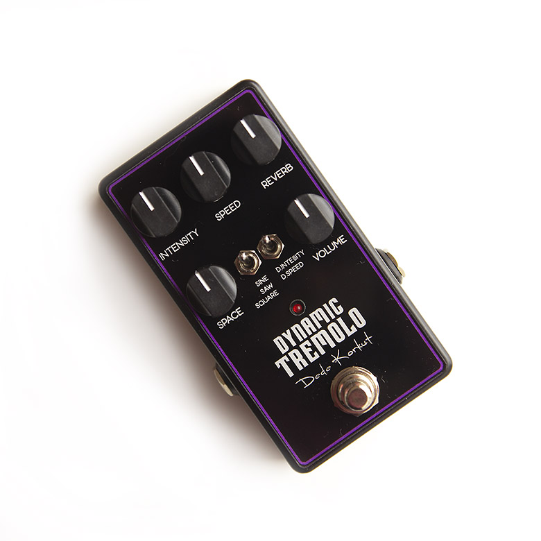

Touch Sensitive Tremolo + Reverb
Dynamic Tremolo
Dynamic Tremolo adds motion that feels reactive instead of static, with a built-in reverb control for players who want one pedal to cover pulse and space.
Response
- Dynamic Intensity mode makes the tremolo deepen as your playing attack gets stronger.
- Dynamic Speed mode increases modulation rate as you lean in harder.
- The result feels more expressive under the hands than a fixed tremolo pattern.
Controls
- Choose between Sine, Saw, and Square wave shapes for smoother or sharper movement.
- Adjust Intensity and Speed from subtle pulse to more dramatic chop.
- Use Reverb and Space to add room around the modulation without needing another pedal immediately after it.
- Volume keeps level control on the face of the pedal for easier rig matching.
Rig Fit
- Ideal for players who want dynamic tremolo behavior rather than a fixed machine-like pulse.
- Works well for live boards where space is limited but modulation and ambience both matter.
- Useful for indie, soul, worship, and cinematic guitar textures where movement should react to touch.
